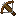
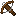
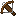

The crossbow texture edit menu can be used to create or edit the
textures for a custom crossbow. When you just started creating new
crossbow textures, it should look like this:

-
Clicking the Cancel button will take you back to the
texture overview, without keeping any
changes you made here.
-
If you are creating new crossbow textures, there will be a Create
button. Clicking it will add the new crossbow textures and then take
you back to the texture overview.
-
If you are modifying existing crossbow textures, there will be an
Apply button. Clicking it will keep the changes and take you
back to the texture overview.
-
The Name field can be used to choose the name of the crossbow
texture. Currently, only English alphabet characters and underscores
are allowed in names. This name will only be shown within the Editor;
it will not be shown in-game.
-
The Standby image is the image that players will see when
the crossbow is not loading or charged. The regular minecraft crossbow
uses this image:

-
The Arrow image is the image that players will see when the
crossbow is charged with an arrow. The regular minecraft crossbow
uses this image: 
-
The Firework image is the image that players will see when the
crossbow is charged with a firework rocket. The regular minecraft
crossbow uses this image:

-
Clicking the green + button will add a new pull texture
to the crossbow textures. (See the section below for more information.)
Pull textures
The pull textures control how the crossbow will look while a player is
pulling/loading it. Multiple pull textures are used to create the
pulling/loading animation. Each pull texture has the following
properties:
-
The Pull value determines when it will be displayed.
A value of 0.0 indicates that it will be shown as soon as the player
starts pulling the crossbow. A value of 0.5 indicates that it will
be shown when the player is halfway there. A value of 1.0
indicates that it will be shown once the player has pulled the
crossbow long enough and is ready to put an arrow (or firework rocket)
on it. Any value between 0.0 and 1.0 can be used.
-
The Image will be displayed when the crossbow is in the right
'stage' of the pulling.
The default minecraft crossbow uses the following pull values and
textures (explicitly in that order!):
- Pull value 0.0:

- Pull value 0.5: 
- Pull value 1.0: 
You are free to use more or lesser pulling images and use different
pull values, but if you do, you will have to create the pulling images
yourself.